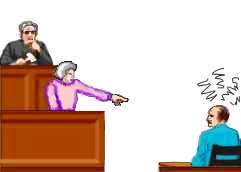
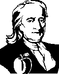

| Ethics Dictionary | Conditions Formulas | PTS Glossary | FAQs |
|
|
| Ethics Dictionary | Conditions Formulas | PTS Glossary | FAQs | |
Note: This chapter is from 'The Road to Clear", Level 2.
The Overt Motivator Sequence
The Overt-Motivator sequence is the give-and-take in a not too friendly world. It seems to be an always present element in sports, business and relationships. You see it in traffic, you see it in international politics, novels and in movies, etc., etc, where 'Revenge' or 'Pay-back' is a recurring theme. It can be quite friendly as in competition or it can be cut-throat and deadly as in wars among nations or the Mafia's family fights and vendettas.
 |
Any game has an |
Let us put forward a couple of definitions and begin to explain what this has to do with auditing and Overts and Withholds:
An Overt is an aggressive or destructive act done by an individual against another person or any of the 8 dynamics (self, family, group, Mankind, animals and plants, physical universe, life and spiritual things, and the infinite or God).
A Motivator is the other way. It is to be at the receiving end of such an act.
The viewpoint from which the act is seen determines whether it is an Overt or Motivator.
It is called a Motivator because it tends to 'motivate' a pay-back. One pays it back by in turn doing an Overt against the aggressor.
This easily gets aberrated by lack of responsibility. Man is basically good and finds it difficult to accept, that he sometimes does bad things. When one has done something bad to someone, he tends to rationalize that it was 'motivated' or justified; "It was not my fault", "He had it coming", "How dare you do that to me - I'll get back at you", etc.
 |
To the accuser it's pay-back time. |
The O/M sequence also leads to, that a person feels he must have done something to deserve it, when one has been hit by something bad.
Examples: You have people believe they were the victim of a car accident, when they actually caused it.
You have people believing they caused the accident, when they were actually the victim of one.
Some people will react to the news of a death by believing they somehow caused it, even if they were very far away from the scene.
It happens routinely in police departments in large cities, that the most unlikely suspects turn up and confess to a murder they have seen in the news. Apparently they do it in an attempt to explain their own feeling of guilt.
It is not a sign of being crazy to be subject to the Overt-Motivator sequence. It is being used continuously in life in all kinds of conflicts and competitive situations. It is part of every single human being's case. The auditor should be very aware of it when running Overts and Withholds as O/Ws are isolated incidents and usually fit in beautifully in this bigger pattern.
There are two extreme cases of these phenomena. There is the person who only will give up motivators - or things done to him. The other extreme is the person, who has done only overts - things done by him. Both are only giving part of the story. These are two sides of the same coin. Both sides have to be addressed for things to unstick and As-is.
The O-M Sequence and Engrams
This is true when you run Engrams and when running Overts and Withholds as
well.
When running Engrams (incidents with pain and a degree of unconsciousness), you will find that Motivator Engrams (where the pc got hurt) tend to hang up to some degree, until the Overt Engram (where the pc hurt somebody in a similar manner) is addressed. They are two types of Engrams as far as the flow is concerned, but are tied together by subject, place or persons involved and stick to each other. When each flow is addressed, each in turn to EP, the whole subject will fly apart and be visible as a bigger EP that once again puts the pc at cause in the area.
Example: An overt Engram could be shooting a dog. The motivator Engram could be, bitten by a dog. The subject matter of 'Dogs' links them together.
You can run into situations, where the dog bite seems hard to run. This can be because the 'Shooting a dog' Engram is in heavy restimulation and needs to be run first.
In Engram running you usually go for resolving pains, aches and misemotions. You find such 'somatics' and follow incidents containing them and go back in time.
If you have such a somatic, that doesn't seem to resolve by running the motivator side, it is because it won't resolve until the overt side is addressed.
Four Flows
The Overt-Motivator sequence is thus part of the theory of running processes
on four flows. You run flow 1 - what was done to the pc (motivator). Flow
2 - pc doing it to another or others (overt). Flow 3 - others doing it to others
(Lock or restimulation); when pc sees others do it it tends to restimulate his
flow 1 and 2. Flow 0 - pc doing it to himself - this is an undercut of Flow 1,
where the pc regularly cognites on how he got himself into the situation in the
first pace. Flow 0 goes directly to pc taking more responsibility and become
more cause.
By checking each flow and run whatever is charged and available you prevent
things from hanging up because of 'The other side of the coin'.
In Engram running you want to find the very first time something happened to a pc and run that incident until it is erased. This may take the running of several or many incidents to get to that basic incident and run it. If an incident won't erase, you look for an earlier incident on the same Chain.
It can however also hang up, because what needs to be addressed is the Overt side of the subject at hand.
Non-existing Engrams
This phenomenon can sometimes play a
trick on the pc and auditor. An 'Engram' that seem to perfectly fit the pain or
ache is tried to be contacted, but it seems very unreal and difficult to run.
The auditor is trying to run 'being bitten by a dog', when it never happened. By
use of a correction list or knowing these data, he finds out that it is actually
the Engram of 'shooting a dog' that needs to be run. When this is done, the
incident causing the pain and ache suddenly comes in plain view and runs out
beautifully. It was the overt incident that was at the bottom of it.
The 'being bitten by a dog' was a motivator, the pc was convinced had to be there somewhere, but it wasn't.
By checking the different flows for Meter reads and pc interest (something you do when running Engrams), you ensure to run what is there and not run what isn't. Thus the technology itself should prevent this phenomenon. But if it should happen due to a false read or whatever, you should know what you are looking at.
When observing pc's and people in general you will see this datum of the Overt-Motivator sequence at work in many shapes and forms.
You can have a person that is stuck in grief on the tone-scale. Your first thought may be, that the person has suffered numerous losses in her life. If the auditing of losses doesn't seem to resolve the situation or only partly resolves it, you simply have to find and audit incidents, where the pc caused other people losses and grief.
This would apply to any emotion on the tone-scale as well as many other complaints that seems resistive at first.
O/Ws and Failed Help
The mechanism of what you do to others will happen to yourself is a control
mechanism that is special for this universe. It comes about when a person's
ability to duplicate is lowered. It is the same as Newton's law of interaction -
for every action there is an equal counter action of the same force.
You rise above these laws of physics when Help, Control and Communication are
high. When these are going low, the O/W becomes a method of enforcing peace.
The Overt-Motivator sequence is not a high natural law, but a mechanism that sets in as the person gets more aberrated. The laws of communication, control and help are senior to this.
The O-M mechanisms sets in after help has failed. Help is a joining of efforts in life. When this joining of forces has failed - only then does the phenomena of overts, withholds and motivators come into play.
Not until two beings have joined forces can they come into conflict or dispute. This is what is behind the bitter fights among brothers or married couples.
There is a cycle like this:
Independent Beings
Communication
Mis-Communication
Control
Mis-Control
Help
Failed Help
Overts and Withholds
Overts and Withholds by Transfer (explained below)
Worrying Others
Worrying About Others
Being Critical
Being Critical of Self
Basically, O-W is an attempt to get back to the state of independent being without taking responsibility for any of the steps in between.
When we run O-W it tends to solve the most
puzzling problems. When a person kicks George in the head, he gets a headache
himself. This makes him reactively think he is George. That is called O/W by
Transfer on the scale above. Overts, withholds and motivators resolves problems
and phenomena on a low humanoid level. It isn't a senior governing law.
When the person moves up, these mechanisms of overt-motivator sequence falls
away.
 |
Newton's Law about |
|
Isaac Newton |
The O-M Sequence in Perspective
The Overt-Motivator sequence is an
intimate part of aberration in any case. You could say it is built into the
physical universe itself. From Newton's Laws we have the Law about Action and
Re-action - any action will cause a counter-action or reaction of the same
magnitude. That is the Overt-Motivator sequence at work in the MEST universe.
Since the pc or thetan is not MEST or part of the physical universe (see Axiom 1, 44, 46 below), he is capable to rise above this. Most religions are trying to make him do that. In Christianity we have "Turn the other cheek" to somebody hitting you. In Eastern philosophy and in many religions we have the Golden Rule: "Only do to others as you want them to do to you", in one form or another. (It's also in the New Testament).
In ST we have the technology of the four flows and the pulling of Overts and Withholds as a tool to take this destructive mechanism apart and make the pc rise above it.
Some related definitions:
Motivator, 1. An overt act against oneself done by another. In other words, a motivator is a harmful action done by somebody else against oneself. 2. An aggressive or destructive act received by a person. It is called a motivator because it tends to lead to a 'pay back'. It 'motivates' a new overt at the receiving end.Overt-Motivator Sequence, 1. If a fellow does an overt, he will then believe he's got to have a motivator or that he has had a motivator. 2. The sequence wherein someone who has committed an overt has to claim the existence of motivators. The motivators are then often used to justify the doing of further overt acts.
Justification, A Justification is an explaining away of wrong conduct. When most explanations, no matter how far fetched, seem perfectly right to the person making them, it is a Justification. It is an attempt to assert self-rightness and other-wrongness.
|
|
|
|
|